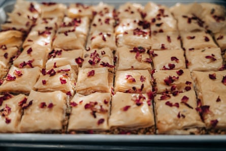
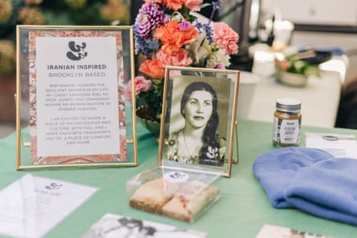

A t the Crown Heights, Brooklyn, bar Whoopsie Daisy, on a sunny fall afternoon, patrons drank natural wines while their children ran around the outdoor garden. Little dogs peeped out from under tables or the tops of backpacks. Modish twentysomethings took turns playing music on their cellphones.
While the location was a bar, the snacks on offer were not nachos or day-old pretzels. Patrons feasted on exquisite vegan cardamon-rose baklava and saffron ice-cream sandwiches. The chef behind the snacks was no short-order cook. Lena Derisavifard, the baker-founder behind the Iranian-influenced pastry company BiBi Bakery, was clad in a denim jumpsuit, chunky green-framed sunglasses and Persian-rug-themed Vans. And the music sailing out of diners’ phones was not a bog-standard bar playlist but rather a mixture of traditional Iranian music and Persian pop.
Derisavifard’s parents were immigrants from Iran who “ended up across the world”, in Texas. Eating Persian meals together helped the family survive the absence of Iranian culture in the American south-west. “Food was the biggest way for our family to teach us about Iran,” said Derisavifard, 34. Her grandfather built an oven in the family garage, where her grandmother made bread. Growing up, Derisavifard baked with her mother, but ultimately decided to enter a more practical profession than being a chef.
She majored in engineering at Southern Methodist University and after graduation got a job in finance, ultimately moving on to a healthcare non-profit. Cooking remained her passion, though. Two years ago, Derisavifard decided to take the leap into baking for money. After she got the necessary permits and LLC status, she applied to sell her baked goods in outdoor markets in Brooklyn. Last December, she started shipping her products direct to consumers nationwide.
Some of BiBi Bakery’s offerings.Photograph: Jeenah Moon/The Guardian
Around that time, Derisavifard applied to participate in the New York-based non-profit food business incubator Hot Bread Kitchen (HBK). She entered Start, the organization’s small-business program, in fall of 2022. A finalist, she pitched the idea of BiBi Bakery during their showcase. She won and got funding to rent hours of access to a couple of commercial kitchen spaces in Brooklyn.
That kitchen is where she now makes her baklava cookies and eggplant dip. She is also involved in a mentorship program that HBK rolled out earlier this year. Derisavifard receives regular coaching from an adviser, the director of operations for the cult olive oil company Graza. Their sessions focus on Derisavifard’s desire to turn BiBi into a brick-and-mortar store.
HBK, which started out as a social enterprise bakery 15 years ago, now specializes in training culinary entrepreneurs like Derisavifard, and has subsidized more than 670 kitchen hours in 2024 so far. Recipients of support are usually descendants of underrepresented groups. According to the American Immigration Council, in 2022 11% of immigrant women were entrepreneurs, up from 8% in 2000. Immigrant women are also statistically more likely to own businesses than women born in the US.
All the HBK participants are female or gender-expansive, and many are Bipoc. At monthly meetings with mentors, they work on everything from labeling and packaging products, food science and supply-chain questions. HBK also offers instruction in business practices.
The obstacles its clients face are especially great in places like Brooklyn, where rents are high and access to startup capital is limited. In such an environment, it’s hard to fulfill the basic need of bringing in personal income. As Derisavifard sees it, “It’s really difficult to manage the income-generating aspects of the business” like shopping for ingredients, packaging the product or dropping parcels off at the post office, while at the same time keeping “admin/foundational/behind-the scenes-parts” of the business going, like managing her company finances on QuickBooks and devoting time to recipe development. All of these elements are needed to sustain and grow the business, said Derisavifard, but there isn’t always enough time to do them all well. That’s where HBK comes in, offering support to women looking to find a sustainable path in the food world.
According to Azra Samiee, 38, the director of small-business programs for HBK, the food industry “is a great entry point into the workforce for immigrant women”. A report in Restaurant Business magazine said that 69% of mid-level restaurant workers were women.
BiBi Bakery honors the legacy of Lena Derisavifard’s female forebears.Photograph: Jeenah Moon/The Guardian
After Derisavifard left her last job, in the healthcare field, she self-funded BiBi, putting “all of my savings into the business”. Right now, she is a one-woman show, doing everything from managing orders to the business’s social media accounts, where she promotes her goods as well as various pop-up series, including an upcoming event inspired by “the lazy ritual of Iranian breakfast”. It will include “grazing boards” of feta cheese and walnuts, among other delicacies.
So far, Derisavifard’s strategy is working, albeit modestly. Based on 2024 year-to-date sales, BiBi projects it will have a 16% increase in sales from 2023.
At the Whoopsie Daisy pop-up, Derisavifard handed out sepia postcards of her Persian grannies (“bibi” means grandmother in Persian) along with an array of desserts. Part of why she’s doing this is because she wants to “share the Iranian culture in a time when people hear the word ‘Iran’” and they think of grim political realities rather than the region’s tastes and pleasures – or, as she put it, “barberry and saffron”.
Ultimately, Derisavifard said she hopes to “wean” herself off HBK’s kitchen and coaching program and open her own bakery by 2025. She will continue to make her desserts, which include such revisionist delights as peanut-butter-and-jelly baklava. “Dessert might not be the soundest food,” she said, “but it nourishes the soul.”
- Alissa Quart is the executive director of the Economic Hardship Reporting Project and the author of seven books, most recently Bootstrapped: Liberating Ourselves from the American Dream